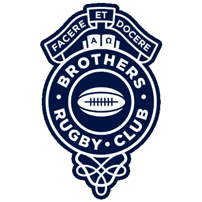
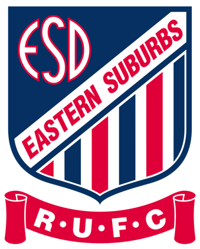
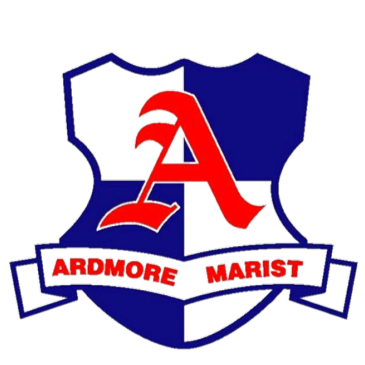

The global club rugby platform
THE GLOBAL GAME.
RANKED.
Discover the clubs shaping rugby around the world. Explore global rankings, follow competitions and track the results behind every rating.
🏉
66Ranked clubs
7Competitions tracked
7Competition datasets
1783.7Top Elo rating
The leaderboard
Global club rankings
Top-ranked clubs across the competitions tracked by XV Nation.
| # | Club | Competition | P | W | D | L | Form | Elo |
|---|---|---|---|---|---|---|---|---|
| 01 |  Brothers | QPR Hospital Cup | 18 | 16 | 1 | 1 | 1783.7 | |
| 02 |  Eastern Suburbs | SRU Shute Shield | 21 | 19 | 0 | 2 | 1763.2 | |
| 03 | MAMarist Albion | CRFU Bascik Transport Cup | 14 | 10 | 2 | 2 | 1744.5 | |
| 04 | TVTuggeranong Vikings | ACT John I Dent Cup | 17 | 15 | 0 | 2 | 1721.5 | |
| 05 | AUAuckland University | ARU Gallaher Shield | 12 | 10 | 0 | 2 | 1700.8 | |
| 06 | PPonsonby | ARU Gallaher Shield | 10 | 8 | 0 | 2 | 1699.9 | |
| 07 | KDKaikorai Demons | ORFU Speight’s Championship Shield | 16 | 11 | 0 | 5 | 1685.6 | |
| 08 | LBLinwood Bulls | CRFU Bascik Transport Cup | 14 | 11 | 1 | 2 | 1670.0 | |
| 09 | WRWarringah Rats | SRU Shute Shield | 21 | 16 | 0 | 5 | 1667.8 | |
| 10 |  Ardmore Marist | CMRFU McNamara Cup | 16 | 14 | 0 | 2 | 1665.8 |
Follow the game
Explore competitions
Browse club rugby across New Zealand and Australia.
Beyond the ladder
More from XV Nation
One home for the club game.